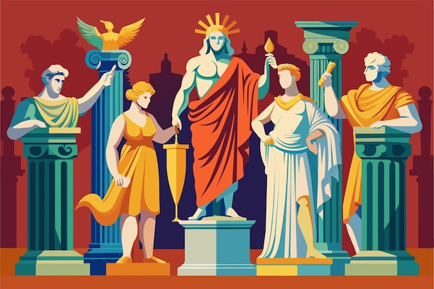
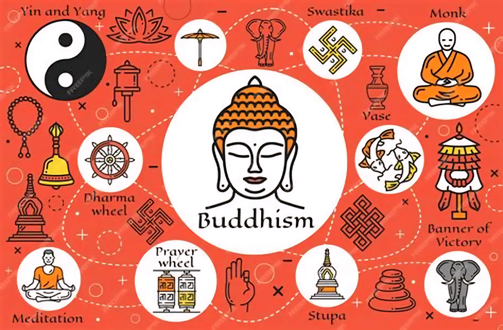
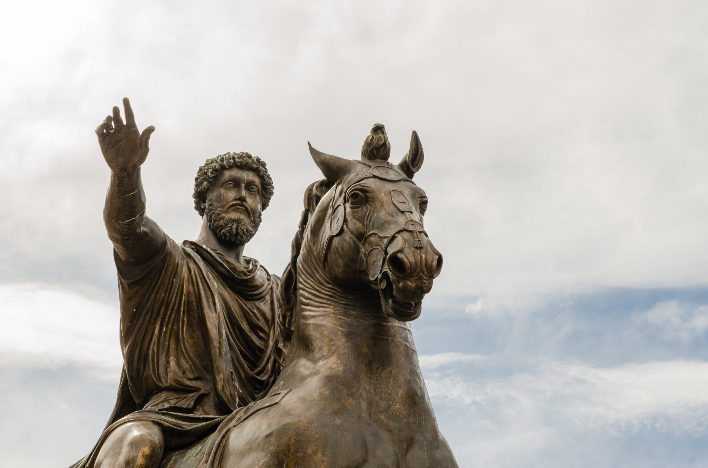
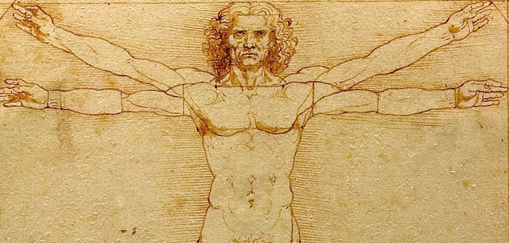
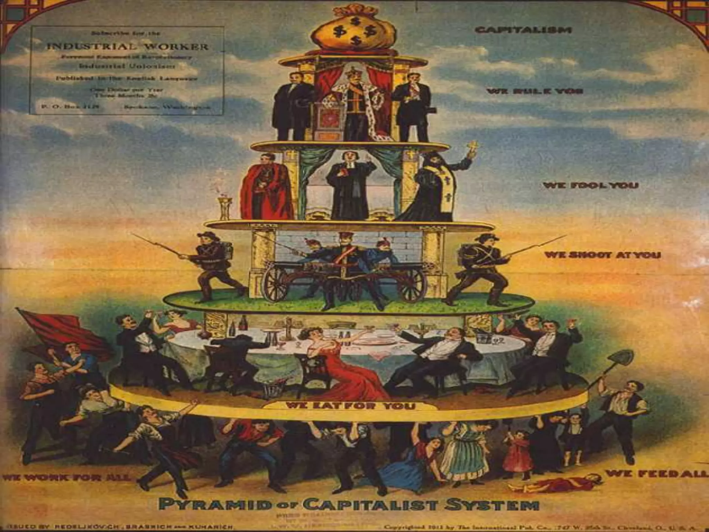

DISCLAIMER
This section focuses on core ideologies that have had major and lasting influence
on human history.
It does not attempt to include every philosophical school, political theory, or minor ideology.
The purpose is to provide historical understanding and knowledge sharing, not to promote or justify
any ideology.
本セクションでは、人類史において大きく持続的な影響を与えた主要な思想・イデオロギーを中心に取り上げている。
すべての哲学思想や政治理論、小規模な思想を網羅するものではない。
特定の思想を推奨・正当化することではなく、歴史的理解と知識の共有を目的としている。
Animism
アニミズム
Era: Prehistoric period (before written history)
Region: Global (early human societies worldwide)
Animism is one of the earliest human worldviews, based on the belief that natural objects and
phenomena—such as animals, plants, rivers, mountains, and weather—possess spiritual essence or
consciousness. It shaped early rituals, myths, and social norms, and strongly influenced later
indigenous and folk religions around the world.
年代: 先史時代（文字記録以前）
地域: 世界各地（初期の人類社会）
アニミズムは、人類最古の世界観の一つであり、動物・植物・川・山・天候などの自然物に霊や意識が宿ると考える思想である。初期の儀礼や神話、社会規範を形成し、各地の民間信仰・先住民文化にも大きな影響を与えた。
0
♥
Polytheism
多神教（ポリテイズム）

Era: Ancient period (c. 3000 BCE and earlier)
Region: Mesopotamia, Egypt, Greece, Rome, India, Mesoamerica, etc.
Polytheism is the belief in multiple gods, each connected to aspects of nature and human life such
as war, fertility, wisdom, or the afterlife. It shaped ancient state religions through temples,
priesthoods, festivals, myths, and monumental architecture, becoming a core foundation of many early
civilizations.
年代: 古代（紀元前3000年頃〜）
地域: メソポタミア・エジプト・ギリシャ・ローマ・インド・メソアメリカなど
多神教は、戦争・豊穣・知恵・死後の世界などを司る複数の神々を信仰する思想である。神殿・祭司制度・祭礼・神話・巨大建築を通じて国家宗教として発展し、古代社会の基盤を形づくった。
0
♥
Monotheism
一神教
Era: c. 2000 BCE – present
Region: Middle East → global
Monotheism is the belief in one supreme god who governs the universe. It introduced universal moral
law, divine authority above rulers, and a linear view of history. Through Judaism, Christianity, and
Islam, monotheism shaped laws, ethics, political legitimacy, and social order across vast regions.
年代: 紀元前2000年頃〜現在
地域: 中東 → 世界各地
一神教は、唯一の絶対神が世界を創造し支配するとする思想である。普遍的な道徳律、支配者を超える神の権威、直線的な歴史観をもたらした。ユダヤ教・キリスト教・イスラム教を通じて、法・倫理・政治秩序に深い影響を与えた。
0
♥
Confucianism
儒教
Era: c. 5th century BCE
Region: East Asia (China, Korea, Japan, Vietnam)
Confucianism emphasizes social harmony, moral virtue, hierarchy, and duty. It shaped governance,
education, and bureaucracy for centuries in East Asia, forming a durable framework for social order
and state administration.
年代: 紀元前5世紀頃
地域: 東アジア（中国・朝鮮・日本・ベトナムなど）
儒教は、社会の調和・徳・秩序・義務を重視する思想である。長期にわたり統治理念・教育・官僚制の基盤となり、東アジアの社会秩序を支えた。
0
♥
Buddhism
仏教

Era: c. 5th century BCE
Region: South Asia → East & Southeast Asia
Buddhism teaches that suffering arises from desire and can be overcome through ethical living,
meditation, and wisdom. It emphasized compassion and self-awareness, deeply influencing philosophy,
art, and ethics across Asia and offering a powerful alternative to ritual-centered religion.
年代: 紀元前5世紀頃
地域: 南アジア → 東アジア・東南アジア
仏教は、欲望が苦しみを生み出すと説き、正しい行い・瞑想・智慧によって解脱に至る思想である。慈悲と内省を重視し、アジア各地の哲学・芸術・倫理観に大きな影響を与えた。
0
♥
Stoicism
ストア派

Era: c. 3rd century BCE
Region: Ancient Greece → Roman world
Stoicism teaches that happiness comes from self-control, reason, and acceptance of fate. It
emphasizes focusing on what you can control and staying calm under pressure. Influencing Roman
elites and later modern thought, it shaped ideas of virtue, resilience, and moral responsibility.
年代: 紀元前3世紀頃
地域: 古代ギリシャ → ローマ世界
ストア派は、理性・自制・運命の受容によって心の平静を得ると説く思想である。制御できるものに集中し、逆境でも冷静であることを重視した。徳や精神的強さの概念に影響を与えた。
0
♥
Humanism
人文主義（ヒューマニズム）

Era: 14th – 16th century
Region: Europe
Humanism shifted thinking toward human-centered values, emphasizing education, reason, and
individual potential. By reviving classical Greek and Roman learning, it helped power the
Renaissance and laid foundations for modern science and more secular political thought.
年代: 14〜16世紀頃
地域: ヨーロッパ
人文主義は、人間の理性・教育・可能性を重視する思想である。古代ギリシャ・ローマの学問を再評価し、ルネサンスを推進するとともに、近代科学や世俗的政治思想の土台を築いた。
0
♥
Liberalism
自由主義
Era: 17th – 18th century
Region: Europe → global
Liberalism emphasizes individual rights, freedom, equality before the law, and limits on government
power. Emerging from the Enlightenment, it challenged absolute rule and became a foundation for
constitutionalism, modern democracy, and civil liberties.
年代: 17〜18世紀頃
地域: ヨーロッパ → 世界各地
自由主義は、個人の権利・自由・法の下の平等・権力の制限を重視する思想である。啓蒙思想から発展し、絶対王政を批判しつつ、立憲政治・民主主義・市民的自由の基礎となった。
0
♥
Nationalism
ナショナリズム（国家主義）
Era: Late 18th century – present
Region: Europe → global
Nationalism holds that people sharing language, culture, or history form a nation that deserves
political self-rule. It drove independence movements and modern nation-states, shaping identity
politics. At the same time, it also contributed to international rivalries and wars.
年代: 18世紀末〜現在
地域: ヨーロッパ → 世界各地
ナショナリズムは、文化・言語・歴史を共有する人々が国家として自己統治すべきだとする思想である。独立運動や国民国家の形成を促進した一方、国家間対立や戦争の要因にもなった。
0
♥
Capitalism
資本主義

Era: 18th century – present
Region: Europe → global
Capitalism is an economic ideology based on private property, markets, and profit incentives. It
fueled industrialization, innovation, and global trade, becoming the dominant economic model in much
of the modern world. However, it also generated inequality and social tensions that inspired major
political reactions.
年代: 18世紀〜現在
地域: ヨーロッパ → 世界各地
資本主義は、私有財産・市場・利益動機を基盤とする経済思想である。産業革命や技術革新、世界貿易を推進し、現代の主流経済体制となった。一方で格差や社会的緊張も生み、反応として様々な思想を生んだ。
0
♥
Socialism
社会主義
Era: 19th century – present
Region: Europe → global
Socialism emerged as a response to industrial capitalism, emphasizing economic equality, social
welfare, and collective responsibility. It influenced labor movements and the development of welfare
states, and proposed alternative ways to organize production and distribute wealth more fairly.
年代: 19世紀〜現在
地域: ヨーロッパ → 世界各地
社会主義は産業資本主義への反応として生まれ、平等・福祉・共同責任を重視する思想である。労働運動や福祉国家の形成に影響を与え、生産や富の分配をより公平にする仕組みを提案してきた。
0
♥
Communism
共産主義
Era: 19th – 20th century (major impact), continuing influence today
Region: Europe → global
Communism aims to abolish private ownership of production and eliminate class divisions, seeking a
classless society. In the 20th century it shaped revolutionary states and global power struggles,
heavily influencing international politics, conflict, and ideological competition.
年代: 19〜20世紀（大きな影響）、現在も影響あり
地域: ヨーロッパ → 世界各地
共産主義は、生産手段の私有や階級の廃止による平等社会を目指す思想である。20世紀には革命国家や国際対立の中心となり、世界政治や紛争、イデオロギー競争に大きな影響を与えた。
0
♥
Fascism
ファシズム
Era: Early–mid 20th century
Region: Europe (influenced other regions)
Fascism promotes authoritarian rule, extreme nationalism, and rejection of liberal democracy. It
glorifies the state, unity under a strong leader, and often uses violence and propaganda to control
society. Although historically concentrated in the 20th century, its consequences reshaped global
politics and became a lasting warning about political extremism.
年代: 20世紀前半〜中頃
地域: ヨーロッパ（他地域にも影響）
ファシズムは、権威主義・極端な国家主義・反自由主義を特徴とする思想である。国家と指導者への絶対的忠誠を求め、宣伝や暴力による統制を正当化しやすい。20世紀の歴史を大きく変え、政治的過激主義への警告として記憶されている。
0
♥
Nazism
ナチズム
Era: 20th century (especially 1930s–1940s)
Region: Germany (major global impact)
Nazism is an extremist form of fascism defined by racial ideology, totalitarian control, and
expansionism. It led to genocide and a catastrophic global war, leaving deep, lasting impacts on
international law, human rights, and modern political memory. It remains one of the most destructive
ideologies in history and a clear warning against hatred-driven politics.
年代: 20世紀（特に1930〜40年代）
地域: ドイツ（世界的影響）
ナチズムは、人種主義・全体主義・侵略主義を特徴とする過激な思想である。大量虐殺と世界大戦を引き起こし、国際法や人権意識、現代の政治的記憶に深い影響を残した。憎悪に基づく政治の危険性を示す代表的な警告として扱われる。
0
♥